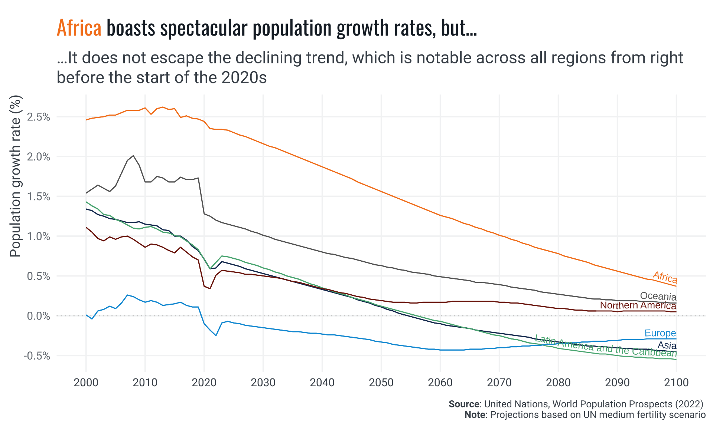

This is a code-based document with openly available code. Open the top-right </> Code button above to review the R code that generates this article.
Introduction
The narrative of human history has been significantly shaped by its population dynamics—from a period of minimal growth, haunted by disease, famine, and war, to a remarkable explosion in numbers following the Industrial Revolution. This surge, catalyzed by technological and medical advancements, propelled the global population from 6.1 in 2000 to 8.1 billion (2024) in just over two decades. However, beneath this growth lies a critical trend: a worldwide decline in fertility rates. This poses unique challenges for the future.


The United Nations forecasts that the worldwide population will peak before the end of the century, surpassing 10.3 billion individuals. Contrary to widespread belief, the world’s population is not undergoing exponential growth. Although the total number of people worldwide continues to rise, the rate of population growth reached its maximum decades ago. To maintain a stable population, the Total Fertility Rate (TFR) must be at replacement level (2.1 children per woman).
The global convergence of total fertility rates (TFR) at or below the replacement level will eventually reduce overall population sizes to earlier levels. However, the demographic composition at that point will differ significantly from the past. The world will face higher old-age dependency ratios, raising concerns and likely intensifying competition for young migrants.
Nevertheless, in numerous regions across the globe, fertility rates have plummeted well below this threshold. Even though this has not been the recent prevalent trend in many sub-regions, such as in Africa and Asia, TFRs are converging across all regions, with projections suggesting a clustering of regional TFR averages around a level of 2 by the end of the century. Globally, the phenomenon of declining birth rates alongside aging populations presents profound implications for economic growth and social stability.
Notwithstanding the staggering numbers, focusing solely on total population sizes can obscure critical trends, particularly in growth rates. For example, while China historically boasts the largest population globally, its growth rate has significantly slowed in recent years, now even showing a negative trend. Conversely, India, though currently smaller, is on a robust growth trajectory projected to continue into the foreseeable future. However, the epicenter of the world’s most dynamic population growth is not in India but Africa. Many African countries have yet to reach peak child, indicating that total fertility rates remain high and the child population continues to expand annually. This contrasts with India, where, despite an increasing overall population due to past high fertility rates, the growth rate of its child population has already peaked1.


While some countries grapple with aging and shrinking populations, others, particularly in sub-Saharan Africa, have the potential to benefit from a demographic dividend. This potential arises from a significant increase in the working-age population (15-64 years) relative to dependents, presenting opportunities for economic growth if accompanied by appropriate policies. This largely explains why Africa’s youth are expected to become the main drive of economic transformation through innovation and entrepreneurship. Yet, this will not happen automatically, the young must be guaranteed the skills, the health status and economic opportunities required to enact change and transformation. Investing in the health and education of Africa’s children and youth is therefore crucial for harnessing the demographic dividend.

Unfortunately, this potential demographic phenomena is a temporary one. Countries cannot expect to reach a stage where they continuously enjoy its benefits. Moreso, these dividends are not cyclical, meaning there is no historical evidence to suggest that regions like Europe, for instance, will experience a significant increase in TFR again. Even temporary fertility boosts from migration are likely to diminish as subsequent generations adapt to the national average TFR. Therefore, the opportunity to harness demographic dividends is presented as a rather short window of opportunity for most countries on the verge of it. Understanding these populational shifts is crucial, not just for demographic analysis, but for shaping public policy and economic strategies globally. The opportunity is fleeting and the challenge is sobering.
The High-Fertility Driven Demographic Dividend Paradox in Africa
The composition of the population, specifically its age distribution, provides valuable insights into the social and economic priorities for public policy planning. Countries not nearing the demographic dividends’ stage, i.e. where the majority of the population is not of working age, may face varying levels of dependency ratios. These ratios can be imbalanced towards either high child dependency or old-age dependency. High old-age dependency ratios may necessitate policies focused on the sustainability of pension systems and addressing rising poverty levels among the elderly. Conversely, high child dependency ratios can strain per capita public investment and hinder job growth. If the growth of the school-age population outpaces education budgets, per capita spending on education will decrease, impacting future growth and employment prospects, which rely on quality education today. On the other hand, African economies are already struggling to create well-paying, stable jobs, let alone address the imminent demographic challenge.2

In Africa, dependency ratios are largely a child dependency issue. This reveals a worrying paradox: as the continent gears up for its largest window of development opportunity—the demographic dividend momentum—it might progressively lose out on its per capita ability to invest in its greatest asset, its young population. Signs of this are visible today in the significant number of children out of school at primary and secondary levels and the frequently observed high levels of learning poverty.


Another channel of economic pressure related to high fertility rates is evident in prevailing job market dynamics for young people. In a high fertility-driven population growth scenario, as the youth cohort grows rapidly, African economies have been struggling to produce decent jobs at comparable rates. This can result in low labor participation rates despite non-negligible job growth rates 3. In fact, between 2024 and 2060, Africa’s working-age population is projected to increase by about 54 percent, equating to roughly 989 million people. According to the Africa Competitiveness Report 2017, countries that implement job-creating policies stand to benefit significantly from this demographic surge. Conversely, the report cautions that nations unable to adopt these measures may face demographic challenges, including high levels of youth unemployment and underemployment.
For a functioning society, you need enough people in the prime of their lives. Young and middle-aged people do most of the work. In any economic system, working-age people create a society’s wealth. But, if current socio-economic trends persist, Africa risks having the working-age population numbers but not the level of human capital needed to maximize its demographic dividends’ window of opportunity. Population growth alone does not automatically lead to prosperity. It is people’s ideas and work that create prosperity, not merely the availability of resources. The potential benefits depend on the quality of economic and social policies that can translate the increased labor pool into tangible economic gains. Expanding public investment in skills’ upgrade and health and education systems’ improvement are, thus, critical to enhancing the future productivity of the growing labor force.
Yet, paradoxically, high population growth rates put tremendous pressure on fiscal space and per capita public investment. Consequently, education funding has been insufficient, with many African countries spending less than the recommended 4% of GDP on education. Moreover, There is evidence that economic prosperity progress has stalled and that poor countries are being left behind. Given that African countries represent a significant percentage of low-income countries and a large proportion of the world’s poor, a powerful vicious cycle is at play in Africa.

To avoid this future scenario of massive waste of human potential, it is thus imperative to place African women, children and youth at the center of any serious public investment program committed to economic transformation, human development, and the preservation of people’s freedom to realize their potential.
Changing the Tide: What Will It Take?
Effective public investments in human capital can take very long time to mature, as they are closely linked to demographic dynamics, which operate on long-term scales. Consequently, the nature of planning should be conceived on the long term dimension as well.
Therefore, ensuring Africa does not miss the opportunity of maximizing its demographic dividends requires designing and implementing highly effective medium- and long-term development plans. These plans must be closely monitored and adjusted as contexts and forecasts change. The challenge is significant, and time is short. So, where to start?
One policy priority stands out: Domestic Resources Mobilization (DRM). Significantly improving the state’s ability to rely on predictable financial flows is crucial for supporting development sustainability with sustainable finances (Duarte, Cristina 2020). This does not contradict the imperative of focusing on women and youth; rather, it complements it. Maintaining policy focus on these groups may hold unparalleled potential for long-term benefits. Substantial, well-targeted, and sustained human capital investments could deliver aggregate returns at sufficiently high levels to enact the kind of economic transformation hoped for.
For instance, education is a critical priority, the median education budget in sub-Saharan Africa was about 3.5% of GDP in 2020, below the international benchmark of 4%. 4. Furthermore, according to the IMF, to achieve universal primary and secondary school enrollment by 2030, education expenditures may need to double, including contributions from both public and private sectors. This would require not just higher funding but also more efficient use of resources to ensure maximum impact per dollar spent (IMF, 2024).
The recent World Bank technical brief on The Adequacy of Public Expenditure on Education and the Needs Post-COVID-19 (2023), finds that:
“Education financing needs to expand to ensure sufficient per-capita spending to meet national education goals. Given variation across countries, common international benchmarks on education spending should not be used deterministically to assess the adequacy of financing. Spending per school-age child, the most accurate indicator of financing adequacy, averages US$53 in LICs, US$318 in LMICs, US$980 in UMICs* and US$7,800 in HICs. These stark differences surpass differences in countries’ living standards and costs of delivering education services. Many LICs and LMICs that meet common international benchmarks on education spending (such as 4-6% of GDP or 15-20% of public budgets) still spend very little per school-age child due to their small state budgets and large young populations”*
Enhancing African education spending and learning outcomes hinges on robust DRM, funding sustainability, and predictable financial flows, since increased education spending is necessary. More to the point, while it needs recognizing that better funding alone does not guarantee improved learning outcomes, countries that spend the least per school-age child face higher levels of learning poverty and fewer learning-adjusted years of schooling 5
Historically, the global total fertility rate (TFR) has significantly dropped from an average of 5 children per woman in 1965 to below 2.5 in recent years. This decline highlights a shift towards lower fertility rates worldwide. However, population growth can still be driven by either a high TFR or population momentum—the effect of having increasingly larger cohorts of women in the reproductive age bracket, which sustains high birth numbers even as individual fertility rates fall. Hence in momentum-driven growth, the young-dependency ratio, and the fiscal pressure it can cause, is reverse. As women have fewer babies, the children population starts to decrease its growth rate, while the overall population continues to grow. Countries are then able to transition into a very advantageous demographic structure, where there are more working people available to contribute to rising the per capita public investment in a decreasing dependent cohort (i.e, the children). Understanding what policies work to incentivize women to have fewer children can help accelerate this transition from high-fertility-driven to momentum-driven population growth, and contribute to improving per capita public investment.
How population momentum works


We already know a lot about what motivates women to have fewer children. Much of it involves policy interventions aimed at empowering women through education, economic opportunities through access to markets (especially land and labor markets), and access to reproductive health services. All these avenues of public action have shown promising evidence of being effective in reducing fertility rates 6. By implementing these strategies, African nations can facilitate a demographic transition that not only supports gender equity but also advances broader economic and human development goals, allowing population momentum to contribute positively to societal change.
A demographic Dividend Framework
Cardona et al. (2020) propose an insightful conceptual framework for generating and capitalizing on the demographic dividend potential in sub-Saharan Africa, based on an extensive review of the concerned literature. The framework emphasizes the importance of governance and economic institutions as foundational elements for all countries, regardless of their demographic stage. The framework is divided into two key stages of the demographic transition: Pre-Dividend (Stage 1) and Early-Dividend (Stage 2).
In the Pre-Dividend stage, countries are characterized by high fertility rates (TFR ≥ 4) and a projected increase in the working-age population. For these countries, the framework highlights four strategic sectors: Family Planning, Maternal and Child Health, Education, and Women’s Empowerment. These sectors are crucial for initiating demographic transition and setting the foundation for economic growth. As countries transition to the Early-Dividend stage (TFR < 4), an additional focus on the Labor Market is introduced. This stage aims to capitalize on the large youth population entering the workforce, thereby enhancing productivity and economic output.
TFR Cumulative Distribution Plots for geographical regions and subregions
The cumulative distribution plots below show the spread of TFR values across different regions from 2020 to 2100. For Europe, the plot indicates that the TFR is 2 or less for more than 95% of the observed data, highlighting a predominantly lower fertility rate. In contrast, Africa shows much higher fertility rates, with only 20% of observations having a TFR of 2 or less. A more detailed view at sub-regional level (second plot) reveals that Western and Middle African sub-regions drive this trend more heavily.


The “wheel of prosperity” further elaborates on specific programs and interventions within these sectors, such as family planning initiatives, educational improvements, maternal health programs, and policies promoting women’s empowerment. Effective governance and strong economic institutions are essential to create a favorable policy environment that supports these interventions, ultimately leading to a sustainable demographic dividend.
Demographic dividend framework diagrams


Conclusion
The dire need for sustained and effective investment in these many, and equally important, avenues of human capital building, further underscores the imperative to improve strong DRM institutions capable of continuously delivering on the financial predictability requirements of long-term investment planning. Domestic resources form the backbone of any such long term strategies, enabling countries to establish a stable and predictable funding base that can adapt to economic fluctuations and external shocks (Duarte, Cristina 2020).
Ensuring stable and predictable domestic financial flows will be crucial in the development of comprehensive national systems in education, health, social security, statistics, and other key sectors. These systems are more than the sum of ad-hoc policy interventions; they require systemic approaches to socioeconomic institutional development. By ensuring long-term, sustainable financing through stronger domestic resource mobilization, African countries can substantially limit the implementational risk of long-term planning for the delivery of sustained improvements in systems of education, health, and other essential services. This should be the cornerstone of the socioeconomic institutional development agenda in the region.
This is even more so following the global economic disruptions caused by the pandemic, which have strained national budgets and exacerbated challenges in raising adequate revenue. Predictable financial flows ensure that financing for human capital public investment is effective, sustainable, and resilient to future challenges and shocks, which will be vital for improving educational quality and equity in a sustainable manner. While external funding may play an important supportive role, particularly in low-income or fragile states, it should complement rather than substitute for domestic financial capability. Alternative external public funding, such as aid and international concessional loans, can be of siloed and highly conditional in nature, which can both multiply the administrative costs of financing for development and fragment the elected sectoral strategic approach. For systemic institutional development to happen, national authorities must be capable of delivering on holistic and cohesive sectoral strategies.
In the past, public borrowing may have been a chosen strategy for many countries. However, low-capacity DRM institutions have twice harmed many African countries: once during the COVID-19 pandemic, when lower-income countries were unable to provide adequate fiscal stimulus, and currently, with high debt servicing ratios crowding out public investment. Evidence from the Education Finance Watch (EFW) 2023 indicates that, although low-income countries increased total education spending in real terms in 2021, this was insufficient to close the learning gap sustained during the pandemic. Countries of all income levels are grappling with pandemic-induced learning loss.
To avoid a future scenario of massive waste of African human potential, African women and youth must be placed at the center of any serious public investment program committed to economic transformation, human development, and the preservation of people’s freedom to realize their potential.
Statistical Appendix
Total Fertility Rate
Working-age Population: size vs TFR champions


Regions & Africa’s Subregions Total Working-Age Distributions
Rankings

Footnotes
Hans Rosling notably introduced the concept of “peak child”, marking the point in global demographic history when the population of children younger than five years old ceased to grow↩︎
For details see Sauda & Pinto Moreira (2020) and “One Year in the Infuriating and Humiliating Search for a Job in South Africa” (2023), part of The New York Times series: “Old World, Young Africa”.↩︎
Afrobarometer News Release (November 2023)↩︎
The Education 2030 Framework for Action sets two public education spending benchmarks. Ambiguously, it urged countries to spend 4% to 6% of their gross domestic product (GDP) on education ‘and/or’ 15% to 20% of their total public expenditure. Considering that poorer countries tend to have small budgets but a high demographic pressure to prioritize education while richer countries have large budgets but a relatively small school-age population, the Global Education Monitoring (GEM) Report, by UNESCO, has long argued that meeting either of the two benchmarks should be considered a minimum requirement.↩︎
“The False Dichotomy between More & More Effective Public Spending on Education: Lessons from Country Experiences”, World Bank Feature Story, April 24 2023, available at: https://www.worldbank.org/en/news/feature/2023/04/24/the-false-dichotomy-between-more-more-effective-public-spending-on-education-lessons-from-country-experiences↩︎
1. International Labour Organization. “Making Labour Statistics Work for Women: Recent Developments and the Way Ahead.” ILOSTAT, 2024. Accessed May 22, 2024. https://ilostat.ilo.org/blog/making-labour-statistics-work-for-women-recent-developments-and-the-way-ahead/
2.International Labour Organization. “Women Are More Likely Than Men to Want a Job But Not Have One.” ILOSTAT, 2024. Accessed May 22, 2024. https://ilostat.ilo.org/blog/women-are-more-likely-than-men-to-want-a-job-but-not-have-one/.
3. International Labour Organization. “Women with Young Children Have Much Lower Labour Force Participation Rates.” ILOSTAT, 2024. Accessed May 22, 2024. https://ilostat.ilo.org/blog/women-with-young-children-have-much-lower-labour-force-participation-rates/.
4. Doepke, Matthias, Anne Hannusch, Fabian Kindermann, and Michèle Tertilt. “New Economics of Fertility.” IMF, 2022. Accessed May 22, 2024. https://www.imf.org/en/Publications/fandd/issues/Series/Analytical-Series/new-economics-of-fertility-doepke-hannusch-kindermann-tertilt↩︎